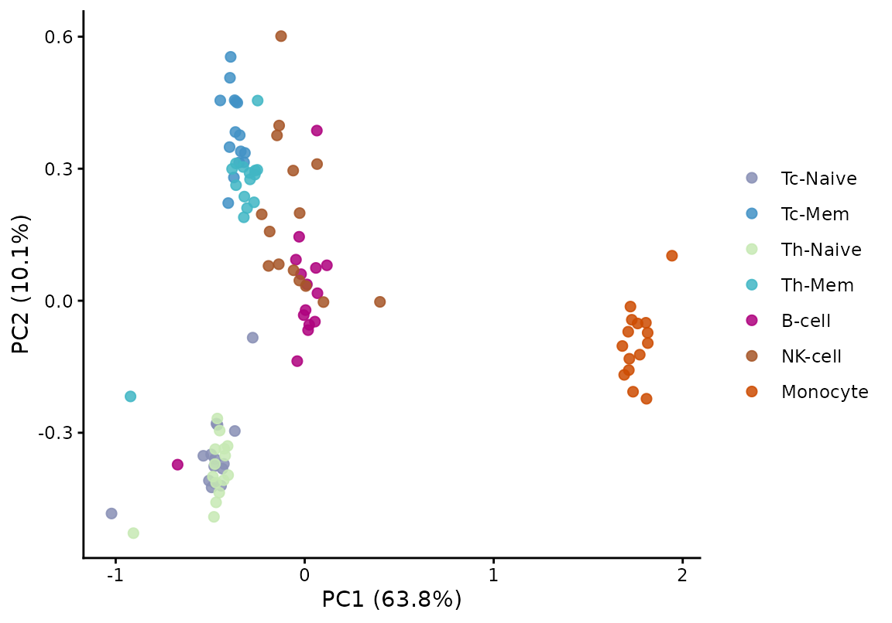
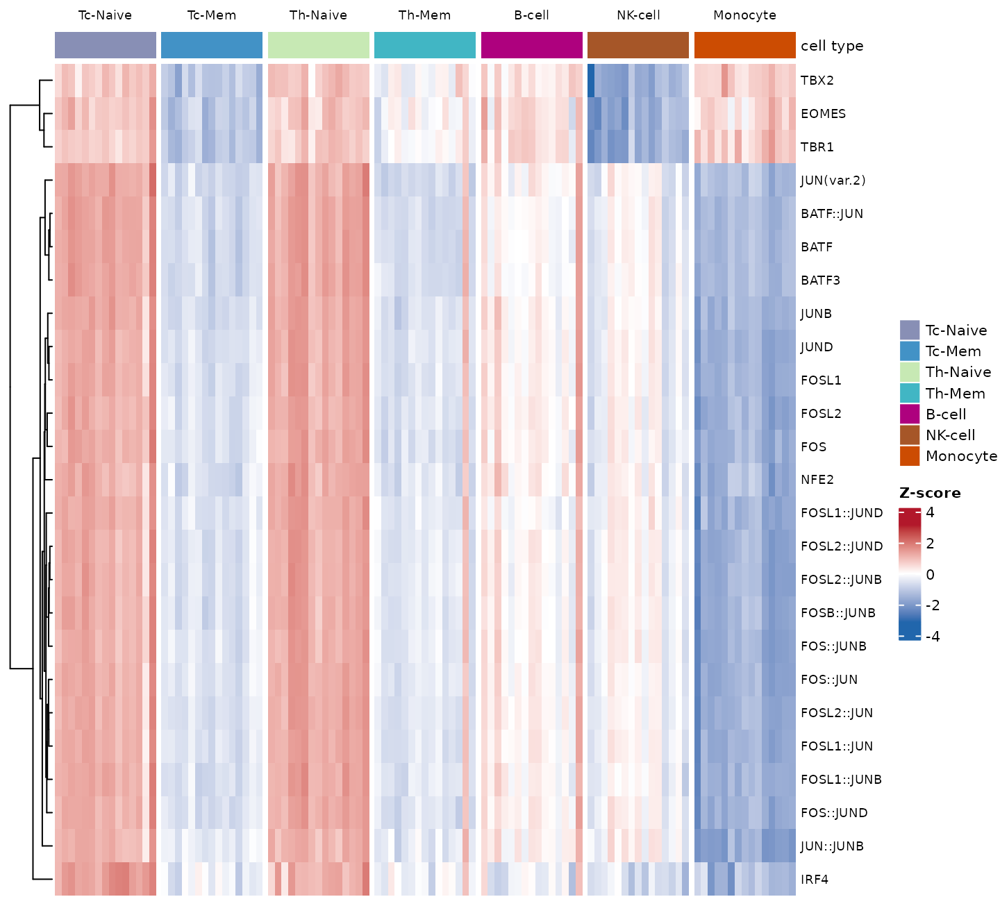
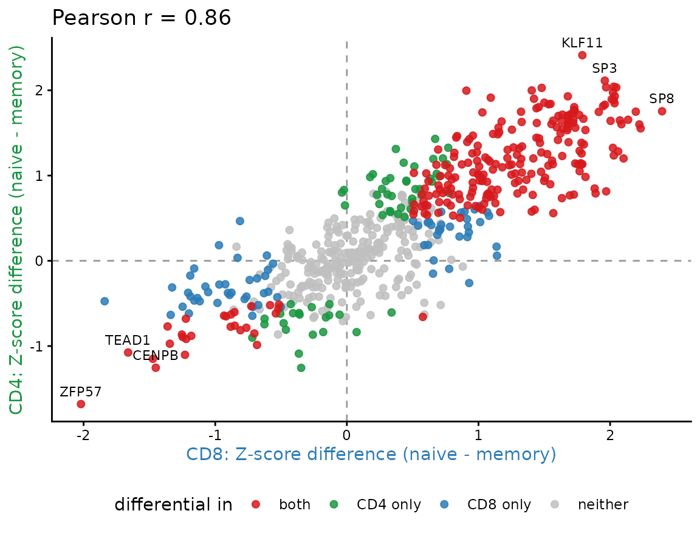
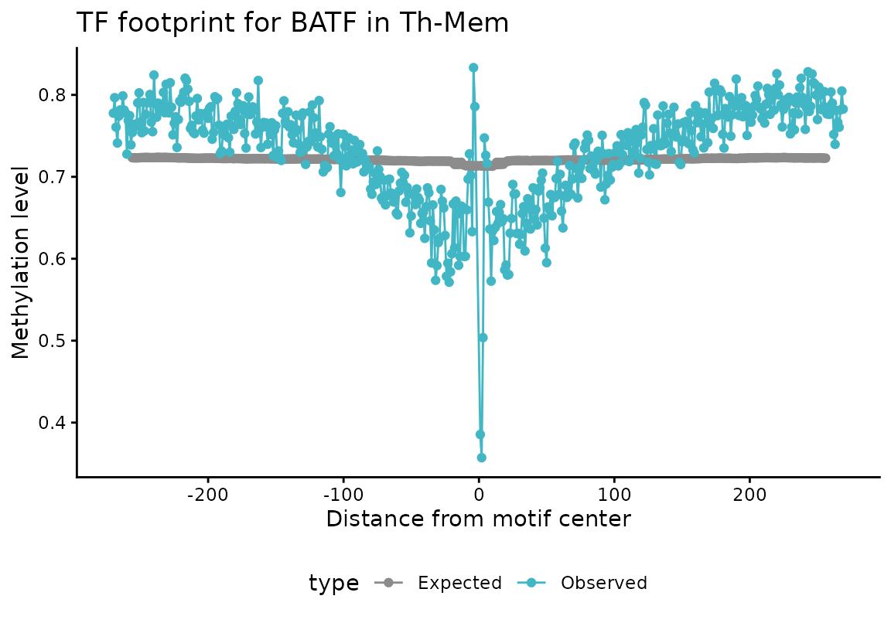
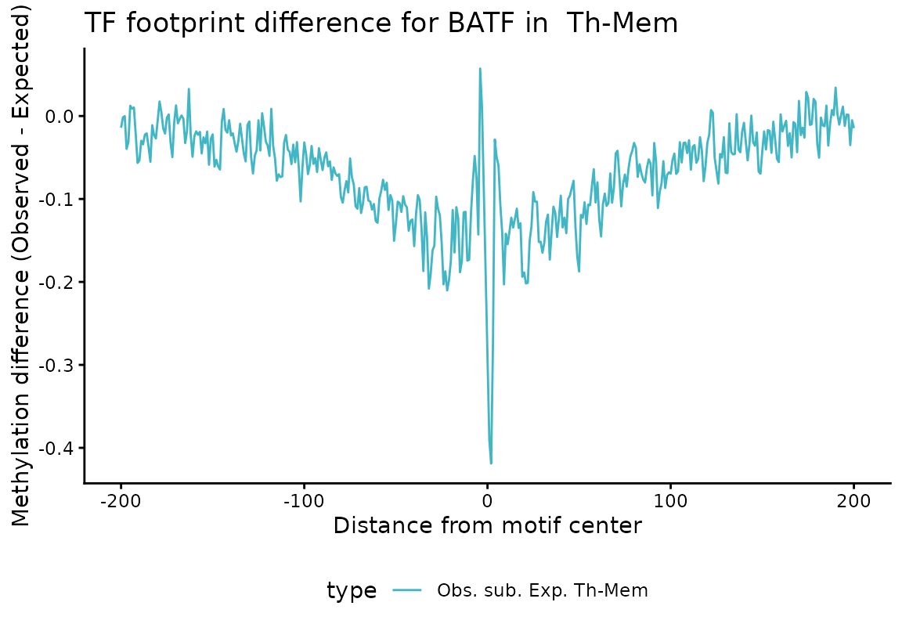

Case study: TF activity in memory vs. naive T cells
Irem B. Gündüz, Sarath Kumar Murugan, Fabian Muller
2026-08-27
Source:vignettes/memTcells.Rmd
memTcells.RmdIntroduction
This vignette demonstrates a complete downstream analysis of methylTFR
deviation scores, starting from a precomputed
methylTFRdeviations object. It covers dimensionality
reduction, differential activity testing between two groups, comparison
of two independent contrasts, and inspection of the motif footprints
that the deviation scores summarise.
The biological setting is the naive-to-memory transition in human T
cells, in the cytotoxic (CD8, Tc) and helper (CD4,
Th) compartments. All quantities are derived from DNA
methylation.
The following methylTFR functionality is demonstrated:
| Step | Function |
|---|---|
| Access bias-corrected deviation scores | deviations() |
| Access row-wise deviation Z-scores | deviationZScores() |
| Rank motifs by activity variability | computeZScoreVariability() |
| Test motifs between two groups | differential_deviation_test() |
| Plot observed and expected methylation | plotExpectedFootprint() |
| Plot the bias-corrected footprint | plotMotifFootprint() |
Deviation scores themselves are computed with
run_methyltfr() from per-sample methylation files, or with
run_methylTFR_RnBeads() directly from a preprocessed
RnBeads object. Both are covered in the Get started vignette; this one begins from
their output.
library(methylTFR)
#> Warning: replacing previous import 'S4Arrays::makeNindexFromArrayViewport' by
#> 'DelayedArray::makeNindexFromArrayViewport' when loading 'SummarizedExperiment'
#> Warning: replacing previous import 'S4Arrays::makeNindexFromArrayViewport' by
#> 'DelayedArray::makeNindexFromArrayViewport' when loading 'HDF5Array'
library(SummarizedExperiment)
library(ggplot2)
library(ComplexHeatmap)
library(circlize)A single palette is used for the seven cell types throughout, so that a colour denotes the same cell type in every figure.
cell_type_colors <- c(
"Th-Mem" = "#41B6C4",
"Tc-Mem" = "#4292C6",
"Tc-Naive" = "#888FB5",
"Th-Naive" = "#C7E9B4",
"B-cell" = "#AE017E",
"NK-cell" = "#A65628",
"Monocyte" = "#CC4C02"
)The example dataset
immuneDeviations contains bias-corrected deviation
scores for pseudobulk methylomes of seven human immune cell types, with
one column per donor sample and one row per JASPAR2020 motif. Four of
the seven are T cell subsets, naive and memory in the cytotoxic and
helper compartments; the remaining three provide a lineage contrast.
The underlying methylomes are from Gündüz et al. (2025); see the References section.
load(system.file("extdata", "immuneDeviations.rda", package = "methylTFR"))
immuneDeviations
#> class: methylTFRdeviations
#> dim: 629 105
#> metadata(5): motifSet genome source citation contrastOrientation
#> assays(2): deviations z
#> rownames(629): FOXF2 FOXD1 ... ZNF263 CREM
#> rowData names(1): motifs
#> colnames(105): Tc-Naive_OP_S5_Long_D1.bedGraph.bed
#> Tc-Naive_OP_S4_Long_D1.bedGraph.bed ...
#> Monocyte_HIV_S3_Pre.bedGraph.bed Monocyte_HIV_S2_Pre.bedGraph.bed
#> colData names(3): CommonMinID condition cell_type
table(colData(immuneDeviations)$cell_type)
#>
#> Tc-Naive Tc-Mem Th-Naive Th-Mem B-cell NK-cell Monocyte
#> 15 15 15 15 15 15 15Provenance is stored in the object metadata.
metadata(immuneDeviations)
#> $motifSet
#> [1] "jaspar2020_distal"
#>
#> $genome
#> [1] "hg38"
#>
#> $source
#> [1] "Pseudobulk single-cell methylomes of human immune cells; see inst/scripts/tcell_data.R"
#>
#> $citation
#> [1] "Gunduz IB, Wei B, Chen DC, Wang W, Hariharan M, Norell T, et al. Dissecting epigenome dynamics in human immune cells upon viral and chemical exposure by multimodal single-cell profiling. bioRxiv 2025.09.09.675101. doi:10.1101/2025.09.09.675101"
#>
#> $contrastOrientation
#> [1] "naive minus memory"The source dataset provides 38 donor samples per cell type. To limit
the package size it was reduced on the sample axis only, to 15 samples
per cell type; every motif is retained. Subsetting motifs would be the
more obvious reduction, but selecting motifs by variability and then
demonstrating computeZScoreVariability() on the result
would be circular. The script used to generate the object is
inst/scripts/tcell_data.R.
Accessing the two assays
A methylTFRdeviations object stores two matrices.
deviations() returns the bias-corrected deviation scores.
deviationZScores() returns the same values standardised
row-wise across samples.
dev_mat <- deviations(immuneDeviations)
z_mat <- deviationZScores(immuneDeviations)
round(dev_mat[seq_len(3), seq_len(4)], 4)
#> Tc-Naive_OP_S5_Long_D1.bedGraph.bed Tc-Naive_OP_S4_Long_D1.bedGraph.bed
#> FOXF2 -0.0184 -0.0467
#> FOXD1 -0.0226 -0.0562
#> IRF2 -0.0862 -0.0703
#> Tc-Naive_OP_S3_High_D1.bedGraph.bed Tc-Naive_OP_S1_Long_D60.bedGraph.bed
#> FOXF2 -0.0069 -0.0262
#> FOXD1 -0.0459 -0.0590
#> IRF2 -0.0727 -0.0662The two assays serve different purposes. Deviation scores are the quantitative estimate of motif activity and are the correct input to statistical tests. Row-wise Z-scores rescale every motif to a common spread, which makes rows comparable in a heatmap, but by construction the standard deviation of each row is 1.
1. Dimensionality reduction
Deviation scores form a low-dimensional feature set, so principal component analysis can be applied to the matrix directly.
pca <- prcomp(t(dev_mat), center = TRUE, scale. = FALSE)
var_expl <- round(100 * pca$sdev^2 / sum(pca$sdev^2), 1)
pca_df <- data.frame(
PC1 = pca$x[, 1], PC2 = pca$x[, 2],
cell_type = colData(immuneDeviations)$cell_type
)
ggplot(pca_df, aes(PC1, PC2, colour = cell_type)) +
geom_point(size = 2, alpha = 0.85) +
scale_colour_manual(values = cell_type_colors, name = NULL) +
labs(
x = sprintf("PC1 (%.1f%%)", var_expl[1]),
y = sprintf("PC2 (%.1f%%)", var_expl[2])
) +
theme_classic()
PC1 separates the myeloid samples from the lymphoid ones. PC2 resolves the T cell subsets by differentiation state: the two naive subsets group together, as do the two memory subsets, while the CD8 and CD4 compartments overlap. Differentiation state therefore accounts for more of the variation in motif activity than the CD8/CD4 distinction does.
2. Differential TF activity
Ranking motifs by variability
Before testing a specific contrast,
computeZScoreVariability() ranks motifs by how much their
activity varies across the dataset, without requiring group labels. Each
sample is calibrated against a null estimated across motifs, so a
variability above 1 indicates a motif varying more than the background
spread of that sample. P-values come from a chi-squared test against
that null.
variability <- computeZScoreVariability(immuneDeviations, method = "robust")
variability <- variability[order(-variability$variability), ]
head(variability, 8)
#> motifs variability p_value p_value_adjusted
#> 251 CEBPB 2.385501 2.555694e-69 1.607532e-66
#> 252 CEBPE 2.334669 7.513492e-65 2.362993e-62
#> 253 CEBPG 2.280077 3.323940e-60 6.969193e-58
#> 553 CEBPA 2.017053 4.419411e-40 6.949523e-38
#> 554 CEBPD 1.975119 3.170841e-37 3.988918e-35
#> 269 GMEB2 1.947420 2.154569e-35 2.258706e-33
#> 69 DBP 1.866374 2.780146e-30 2.498160e-28
#> 256 TEF 1.790718 7.481124e-26 5.882034e-24The highest-ranking motifs belong to the CEBP family, which distinguish the myeloid lineage from the lymphoid ones. This is a screen across all cell types and requires no group labels, which makes it complementary to the two-group test used below.
This function reads the deviations assay. Supplying
row-wise Z-scores instead would be uninformative, because their per-row
standard deviation is 1 for every motif, as shown above.
Optional bootstrap confidence bounds are available via
bootstrap = TRUE.
Testing between two groups
differential_deviation_test() tests each motif for a
difference in deviation scores between two groups. With two groups and
parametric = TRUE the test is a Welch t-test; p-values are
adjusted with the Benjamini-Hochberg procedure.
The returned mean_difference column is unsigned, so the
direction of each change is computed separately. Differences below are
oriented as naive minus memory, so that a positive value indicates a
higher deviation score in the naive state.
compare_subsets <- function(object, naive, memory) {
grp_all <- colData(object)$cell_type
keep <- grp_all %in% c(naive, memory)
grp <- factor(as.character(grp_all[keep]), levels = c(naive, memory))
dev_sub <- deviations(object)[, keep, drop = FALSE]
z_sub <- deviationZScores(object)[, keep, drop = FALSE]
is_naive <- grp == naive
res <- differential_deviation_test(
deviations = dev_sub,
groups = grp,
alternative = "two.sided",
parametric = TRUE,
padjMethod = "BH"
)
res$diff <- rowMeans(dev_sub[, is_naive, drop = FALSE]) -
rowMeans(dev_sub[, !is_naive, drop = FALSE])
res$zdiff <- rowMeans(z_sub[, is_naive, drop = FALSE]) -
rowMeans(z_sub[, !is_naive, drop = FALSE])
res[order(res$p_value_adjusted), ]
}
tc_res <- compare_subsets(immuneDeviations, "Tc-Naive", "Tc-Mem")
th_res <- compare_subsets(immuneDeviations, "Th-Naive", "Th-Mem")
head(tc_res, 8)
#> motifs p_value p_value_adjusted mean_difference
#> BATF3 BATF3 8.849438e-20 5.566296e-17 0.11777405
#> BATF::JUN BATF::JUN 2.282248e-19 7.177671e-17 0.11601928
#> BATF BATF 5.255967e-19 1.102001e-16 0.11884510
#> JUN(var.2) JUN(var.2) 1.529002e-18 2.404355e-16 0.11285040
#> JUNB JUNB 4.117214e-17 5.179456e-15 0.12884298
#> FOSL2 FOSL2 5.469143e-17 5.733484e-15 0.08754993
#> FOSL1::JUND FOSL1::JUND 6.586962e-17 5.918856e-15 0.10381391
#> TBR1 TBR1 1.071089e-16 8.421438e-15 0.07404221
#> diff zdiff
#> BATF3 0.11777405 2.033917
#> BATF::JUN 0.11601928 2.011964
#> BATF 0.11884510 2.027036
#> JUN(var.2) 0.11285040 2.036036
#> JUNB 0.12884298 1.913842
#> FOSL2 0.08754993 1.681151
#> FOSL1::JUND 0.10381391 1.684212
#> TBR1 0.07404221 1.889798Choosing an effect-size threshold
The helper above returns two effect sizes on different scales.
diff is the difference in raw deviation scores;
zdiff is the same contrast expressed in Z-score units. A
threshold must be applied on the scale it was defined for, since the two
ranges differ by an order of magnitude.
Visualising the differential motifs
The motifs with the strongest change in the CD8 comparison are shown as row-wise Z-scores across all seven cell types, drawn with ComplexHeatmap. Columns are split by cell type and annotated with the palette defined above; rows are clustered, so motifs with a similar activity profile are placed together. The fill scale is diverging and encodes the Z-score, which is a property of the motif rather than of the cell type.
top_motifs <- head(
tc_res$motifs[
tc_res$p_value_adjusted < 0.05 & abs(tc_res$zdiff) > 0.5
], 25
)
sample_order <- order(colData(immuneDeviations)$cell_type)
# as.matrix() so that the heatmap also works when the assay is
# disk-backed.
z_top <- as.matrix(z_mat[top_motifs, sample_order, drop = FALSE])
subset_of <- colData(immuneDeviations)$cell_type[sample_order]
# A symmetric diverging scale, so that zero is white and the two
# directions are comparable.
z_lim <- max(abs(z_top))
z_col <- colorRamp2(
c(-z_lim, 0, z_lim),
c("#2166AC", "white", "#B2182B")
)
column_ann <- HeatmapAnnotation(
`cell type` = subset_of,
col = list(`cell type` = cell_type_colors),
annotation_name_gp = grid::gpar(fontsize = 8),
annotation_legend_param = list(`cell type` = list(
title = "",
labels_gp = grid::gpar(fontsize = 8)
))
)
heat <- Heatmap(
z_top,
name = "Z-score",
col = z_col,
top_annotation = column_ann,
column_split = subset_of,
cluster_columns = FALSE,
cluster_rows = TRUE,
show_row_dend = TRUE,
show_column_names = FALSE,
row_names_gp = grid::gpar(fontsize = 7),
column_title_gp = grid::gpar(fontsize = 7),
row_dend_width = grid::unit(8, "mm"),
heatmap_legend_param = list(
title_gp = grid::gpar(fontsize = 8, fontface = "bold"),
labels_gp = grid::gpar(fontsize = 8),
legend_height = grid::unit(25, "mm")
)
)
draw(heat, merge_legend = TRUE)
Most of the selected motifs belong to the AP-1 family. Their pattern
is consistent across both T compartments, high in the naive subsets and
low in the memory subsets, and lowest of all in monocytes. The T-box
motifs EOMES, TBR1 and TBX2
follow a different pattern, low in cytotoxic memory T cells and in NK
cells, which is where those factors are active. Including the non-T
lineages makes clear that the memory signature is not simply a general
lymphoid-myeloid contrast.
3. Comparing the two compartments
The CD8 and CD4 contrasts are computed from disjoint sets of samples. Plotting the Z-score differences against each other shows whether the two compartments identify the same motifs. Each motif is classified by where it reaches significance: in both compartments, in CD4 only, in CD8 only, or in neither.
z_cut <- 0.5
shared <- intersect(tc_res$motifs, th_res$motifs)
tc_i <- match(shared, tc_res$motifs)
th_i <- match(shared, th_res$motifs)
agree <- data.frame(
motifs = shared,
tc = tc_res$zdiff[tc_i],
th = th_res$zdiff[th_i]
)
# A motif counts as differential in a compartment when it passes both
# the adjusted p-value and the Z-score effect-size threshold there.
sig_tc <- tc_res$p_value_adjusted[tc_i] < 0.05 & abs(agree$tc) > z_cut
sig_th <- th_res$p_value_adjusted[th_i] < 0.05 & abs(agree$th) > z_cut
agree$category <- factor(
ifelse(
sig_tc & sig_th, "both",
ifelse(sig_th, "CD4 only", ifelse(sig_tc, "CD8 only", "neither"))
),
levels = c("both", "CD4 only", "CD8 only", "neither")
)
rho <- cor(agree$tc, agree$th)
round(rho, 3)
#> [1] 0.864
table(agree$category)
#>
#> both CD4 only CD8 only neither
#> 242 60 70 257
category_colors <- c(
"both" = "#D7191C",
"CD4 only" = "#1A9641",
"CD8 only" = "#2C7BB6",
"neither" = "grey75"
)
# Label the extremes at both ends: the strongest motifs cluster tightly,
# so ranking by magnitude alone places every label in one corner.
ranked <- agree[order(agree$tc + agree$th), ]
labelled <- rbind(head(ranked, 4), tail(ranked, 4))
# Draw the non-differential motifs first, so that they do not cover the
# coloured ones.
agree_ord <- agree[order(agree$category, decreasing = TRUE), ]
ggplot(agree_ord, aes(tc, th)) +
geom_hline(yintercept = 0, linetype = "dashed", colour = "grey60") +
geom_vline(xintercept = 0, linetype = "dashed", colour = "grey60") +
geom_point(aes(colour = category), size = 1.8, alpha = 0.85) +
geom_text(
data = labelled, aes(label = motifs),
size = 3, vjust = -0.8, check_overlap = TRUE
) +
scale_colour_manual(
values = category_colors,
breaks = names(category_colors),
name = "differential in"
) +
labs(
x = "CD8: Z-score difference (naive - memory)",
y = "CD4: Z-score difference (naive - memory)",
title = sprintf("Pearson r = %.2f", rho)
) +
theme_classic() +
theme(
legend.position = "bottom",
axis.title.x = element_text(colour = category_colors[["CD8 only"]]),
axis.title.y = element_text(colour = category_colors[["CD4 only"]])
)
The effect sizes are correlated and share sign for most motifs, so the same factors are recovered in both compartments. Motifs differential in both compartments (red) lie along the diagonal, away from the origin. The compartment-specific motifs (green and blue) sit closer to the axis they are specific to, and most of them fall just short of the threshold in the other compartment rather than changing in the opposite direction.
4. Motif footprints
A deviation score summarises a footprint: methylation at the motif centre relative to its flanking regions, corrected for GC content. Plotting the footprint shows the profile the score is derived from.
The footprint functions require base-resolution methylation calls and
the motif annotation. This section therefore uses the small
BATF example data bundled with the package rather than the
pseudobulk object above. BATF is an AP-1 family factor and
appears among the motifs identified in the comparisons above.
The bundled methylome is a single memory T helper sample, so the observed curve is drawn in that subset’s colour from the palette used throughout this vignette, while the expected curve is kept neutral.
load(system.file("extdata", "BATF_tf_bindsites.rda", package = "methylTFR"))
load(system.file("extdata", "BATF_gcfreqs.rda", package = "methylTFR"))
load(system.file("extdata", "gcdist_BATF.rda", package = "methylTFR"))
load(system.file("extdata", "msites_sub.rda", package = "methylTFR"))
# The bundled methylome is a single sample of one subset, so it is
# labelled and coloured with the same palette used above.
batf_cell_type <- "Th-Mem"
batf_colour <- cell_type_colors[[batf_cell_type]]Observed and expected profiles
plotExpectedFootprint() draws two curves: the
methylation observed around the motif, and the level expected from the
GC content of the same windows. The difference between them is the
quantity the deviation score captures.
plotExpectedFootprint(
motif = "BATF",
tf_bindsites = tf_bindsites,
msites = msites_sub,
sample_name = batf_cell_type,
gc_dist = gcdist,
gcfreqs = gcfreqs,
enhancer = NULL,
returnPlotData = FALSE
) +
scale_colour_manual(values = c(
Observed = batf_colour, Expected = "grey55"
))
Bias-corrected footprint
plotMotifFootprint() combines the two profiles into a
single corrected curve, normalised against the outer flanking windows.
With method = "substraction" the curve is the observed
minus the expected profile; method = "division" uses their
ratio.
plotMotifFootprint(
motif = "BATF",
tf_bindsites = tf_bindsites,
msites = msites_sub,
sample_name = batf_cell_type,
gc_dist = gcdist,
gcfreqs = gcfreqs,
enhancer = NULL,
method = "substraction",
flankNorm = 50
) +
scale_colour_manual(values = batf_colour)
#> Warning: Removed 112 rows containing missing values or values outside the scale range
#> (`geom_line()`).
A depression at the motif centre indicates methylation below the level predicted by GC content, which corresponds to a negative deviation score.
References
Gündüz IB, Wei B, Chen DC, Wang W, Hariharan M, Norell T, Broderick TJ, McClain MT, Satterwhite LL, Burke TW, Petzold EA, Shen X, Woods CW, Fowler VG Jr, Ruffin F, Panuwet P, Barr DB, Wilk AJ, Lee MJ, Blish C, Castellino F, Walley AM, Evans T, Ecker JR, Müller F, Greenleaf WJ. Dissecting epigenome dynamics in human immune cells upon viral and chemical exposure by multimodal single-cell profiling. bioRxiv 2025.09.09.675101. doi: 10.1101/2025.09.09.675101
Session Information
sessionInfo()
#> R version 4.6.1 (2026-06-24)
#> Platform: x86_64-pc-linux-gnu
#> Running under: Ubuntu 24.04.4 LTS
#>
#> Matrix products: default
#> BLAS: /usr/lib/x86_64-linux-gnu/openblas-pthread/libblas.so.3
#> LAPACK: /usr/lib/x86_64-linux-gnu/openblas-pthread/libopenblasp-r0.3.26.so; LAPACK version 3.12.0
#>
#> locale:
#> [1] LC_CTYPE=C.UTF-8 LC_NUMERIC=C LC_TIME=C.UTF-8
#> [4] LC_COLLATE=C.UTF-8 LC_MONETARY=C.UTF-8 LC_MESSAGES=C.UTF-8
#> [7] LC_PAPER=C.UTF-8 LC_NAME=C LC_ADDRESS=C
#> [10] LC_TELEPHONE=C LC_MEASUREMENT=C.UTF-8 LC_IDENTIFICATION=C
#>
#> time zone: UTC
#> tzcode source: system (glibc)
#>
#> attached base packages:
#> [1] grid stats4 stats graphics grDevices utils datasets
#> [8] methods base
#>
#> other attached packages:
#> [1] circlize_0.4.18 ComplexHeatmap_2.28.0
#> [3] ggplot2_4.0.3 methylTFR_0.99.4
#> [5] SummarizedExperiment_1.42.0 Biobase_2.72.0
#> [7] GenomicRanges_1.64.0 Seqinfo_1.2.0
#> [9] IRanges_2.46.0 S4Vectors_0.50.2
#> [11] BiocGenerics_0.58.1 generics_0.1.4
#> [13] MatrixGenerics_1.24.0 matrixStats_1.5.0
#> [15] data.table_1.18.6.1 BiocStyle_2.40.0
#>
#> loaded via a namespace (and not attached):
#> [1] tidyselect_1.2.1 dplyr_1.2.1 farver_2.1.2
#> [4] R.utils_2.13.0 S7_0.2.2 fastmap_1.2.0
#> [7] digest_0.6.39 lifecycle_1.0.5 cluster_2.1.8.2
#> [10] magrittr_2.0.5 compiler_4.6.1 rlang_1.3.0
#> [13] sass_0.4.10 tools_4.6.1 yaml_2.3.12
#> [16] knitr_1.51 labeling_0.4.3 S4Arrays_1.12.0
#> [19] DelayedArray_0.38.2 RColorBrewer_1.1-3 abind_1.4-8
#> [22] HDF5Array_1.40.0 withr_3.0.3 desc_1.4.3
#> [25] R.oo_1.27.1 colorspace_2.1-3 Rhdf5lib_2.0.0
#> [28] scales_1.4.0 iterators_1.0.14 cli_3.6.6
#> [31] rmarkdown_2.31 crayon_1.5.3 ragg_1.5.2
#> [34] otel_0.2.0 httr_1.4.8 rjson_0.2.23
#> [37] cachem_1.1.0 rhdf5_2.56.0 stringr_1.6.0
#> [40] parallel_4.6.1 BiocManager_1.30.27 XVector_0.52.0
#> [43] vctrs_0.7.3 Matrix_1.7-5 jsonlite_2.0.0
#> [46] bookdown_0.47 GetoptLong_1.1.1 clue_0.3-68
#> [49] systemfonts_1.3.2 h5mread_1.4.1 foreach_1.5.2
#> [52] jquerylib_0.1.4 glue_1.8.1 pkgdown_2.2.1
#> [55] codetools_0.2-20 stringi_1.8.9 gtable_0.3.6
#> [58] shape_1.4.6.1 GenomeInfoDb_1.48.0 UCSC.utils_1.8.0
#> [61] tibble_3.3.1 logger_0.4.3 pillar_1.11.1
#> [64] htmltools_0.5.9 rhdf5filters_1.24.1 R6_2.6.1
#> [67] textshaping_1.0.5 doParallel_1.0.17 evaluate_1.0.5
#> [70] lattice_0.22-9 R.methodsS3_1.8.2 png_0.1-9
#> [73] bslib_0.12.0 SparseArray_1.12.2 xfun_0.60
#> [76] fs_2.1.0 pkgconfig_2.0.3 GlobalOptions_0.1.4